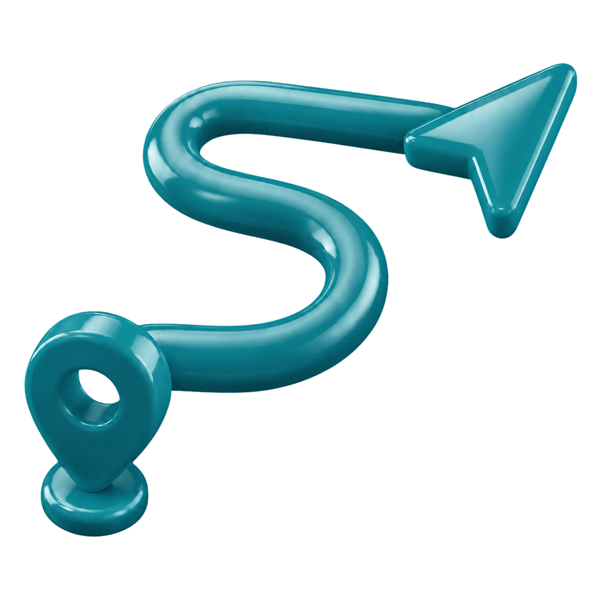

Escucha
Conversamos e investigamos para conocer tu marca, tu contexto, tus objetivos y los problemas que hoy están afectando tu comunicación.
Antes de diseñar, publicar o lanzar, entendemos qué necesita tu marca, ordenamos la dirección y transformamos esa estrategia en piezas concretas.

Cada marca tiene su contexto, sus desafíos y sus objetivos.
Nuestra forma de trabajar pone primero la estrategia, para que cada decisión tenga un propósito.
Conversamos e investigamos para conocer tu marca, tu contexto, tus objetivos y los problemas que hoy están afectando tu comunicación.
Definimos qué necesita ordenar la marca, qué mensajes conviene priorizar y qué criterios deberían guiar el trabajo.
Transformamos esa dirección en piezas concretas, sistemas visuales, contenidos o soportes digitales alineados con tus objetivos.
Cada etapa nos ayuda a tomar mejores decisiones, evitar piezas sueltas y construir una comunicación más clara desde el inicio.
Conocemos tu marca, tus objetivos y los problemas que hoy afectan tu comunicación.
Definimos mensajes, prioridades y criterios para que cada acción tenga una dirección clara.
Creamos piezas, contenidos y materiales visuales alineados con la identidad de tu marca.
Revisamos resultados, corregimos lo necesario y dejamos una base más ordenada para seguir creciendo.
El objetivo no es solo entregar piezas. Es ayudarte a construir una base más ordenada para que tu marca comunique mejor y pueda tomar mejores decisiones hacia adelante.
Tu marca comunica mejor qué hace, para quién lo hace y por qué deberían elegirla.
La identidad, los mensajes y los contenidos empiezan a responder a una misma dirección.
Tus piezas, canales y materiales transmiten una imagen más cuidada, consistente y confiable.
Cada acción tiene un propósito más claro y deja de depender de la improvisación.
Tu comunicación queda más ordenada para sostener campañas, contenidos, presentaciones o nuevos proyectos.
Contanos en qué etapa estás y te ayudamos a ordenar la estrategia para que tu comunicación tenga más impacto.